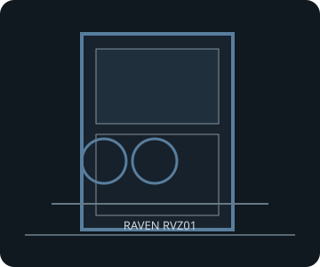

[ RAVEN RVZ01 // ORIGINAL SFX REVISION ]
SilverStone Raven RVZ01
382 × 105 × 350 mm (W × H × D), about 14 L; original Mini-ITX/Mini-DTX Raven chassis designed around SFX/SFX-L power.

FITMENT CAVEAT: This record describes the named model only. Published maxima can depend on revision, brackets, fan/radiator position, PSU cable routing and drive configuration; verify the exact manual and parts before purchase or assembly.
Specifications & fit
| Exact model | SilverStone Raven RVZ01 |
|---|---|
| Motherboard sizes | Mini-ITX (170 × 170 mm) or Mini-DTX (203 × 170 mm); included PCIe riser positions the GPU in the second chamber. |
| PSU type and fit | SFX or SFX-L. This original RVZ01 is distinct from RVZ01-E, which takes short ATX supplies. |
| GPU length and thickness | Up to 330 mm long × 149 mm wide/high, within the two-slot riser position. Published width/card limit is the relevant fit envelope; verify shroud, plugs and exact card thickness. |
| CPU cooler height | Maximum CPU cooler height 83 mm. |
| Radiator and fan options | Two included 120 mm fans and an additional 120 mm position. Manufacturer cooling layouts allow one 120 mm radiator at the top or one 240 mm radiator at the bottom, subject to manual-specified card and drive arrangement. |
| Storage clearances | One external slim optical-drive position, one 3.5-inch internal position and three 2.5-inch positions. The 3.5-inch tray and GPU/riser share volume; use the manual layout for mixed drive/radiator configurations. |
| Compatibility notes | Do not use RVZ01-E's ATX PSU limit for this model. Verify the exact SFX/SFX-L body length, GPU width, fan/radiator stack and drive tray together. |
Compatibility & preservation notes
Do not use RVZ01-E's ATX PSU limit for this model. Verify the exact SFX/SFX-L body length, GPU width, fan/radiator stack and drive tray together.
- Record the case model/SKU, revision, included riser, brackets and manual version before changing hardware.
- Measure the actual GPU shroud, power connectors, cooler, radiator/fan stack and cable bend radii; do not assume listed maxima can coexist.
- Keep original drive trays, standoffs, fasteners, fan brackets and panel hardware with the enclosure.
Manufacturer sources
- SilverStone — Raven RVZ01 product specificationsManufacturer model specifications for board, power, fans and component fit.
- SilverStone — Raven RVZ01 manual (PDF)Manufacturer instructions and diagrams for radiator, GPU, riser and drive combinations.
Sources are manufacturer product documentation and the model-specific manual; consult the matching revision for assembly dimensions.